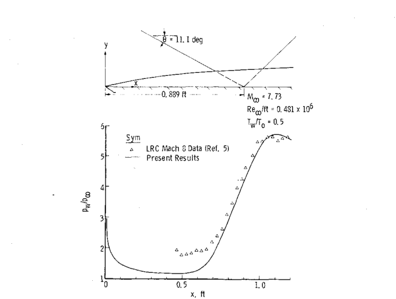
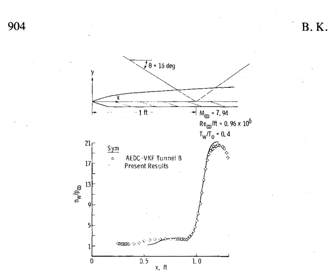

01中文摘要
本文为研究简报，目的是检验MacCormack显式分裂两步算法在高超声速层流边界层/激波干扰中的适用性。将数值解与AEDC-VKF B风洞及Langley研究中心马赫8变密度风洞的实验数据比较，入射激波角限制在16°以内、雷诺数不超过10^6/ft，以维持层流。结果表明，壁面压力比对峰值位置和干扰区压力梯度预测良好；但在大分离区情形，计算得到的分离区明显短于实验，性能仅属勉强，怀疑由流向网格分辨率不足造成。
02阅读说明
文章类型：数值模拟短文（AIAA Journal Synoptic，1977，共2页）。材料范围：p.903-904 全文；bundle 仅抓取 Fig.2、Fig.3 两张图，Fig.1 只有正文描述、无图件。图表可读性：两张裁剪图可读，但图内小字标注（M∞、Re、Tw/T0）辨识度一般；公式已用 PDF 原页核对。信息完整度：中等——算法、网格量、边界条件、CFL、收敛判据均未给出，算法细节引自 MacCormack 1972；全文为缩短版，完整报告为 N77-19355。提取口径：以正文明确陈述为主，图内数值标注与正文冲突处单独列出。 文章类型：期刊
03一句话核心与三句话摘要
用 MacCormack 显式算法检验高超声速层流激波/边界层干扰：附着工况吻合，大分离区偏短，归因于流向网格不足。
- 问题与缺口：高超声速层流边界层/斜激波干扰缺少对 MacCormack 显式算法适用性的检验，尤其在大分离与回流区。 AI概括
- 方法与工况：用守恒型层流非定常 Navier-Stokes 方程与 MacCormack 显式两步法，对三个 M∞≈7.3–7.9、入射激波角 15–16°、Re∞/ft≈0.96×10^6 的工况与 AEDC-VKF、LRC 风洞数据对比；附着与小分离工况吻合，大分离工况分离区明显偏短。 AI概括
- 结论：流向格心雷诺数约 1250、远高于建议的量级 2，而法向仅 6.0；作者据此怀疑流向分辨率不足，但把 Δx 缩小数个量级在当时的 CPU 与存储条件下不可行，且该限制适用于所有离散空间椭圆方法。 原文明确
04核心内容清单
| 要点 | 类型 | 重要性 | 原文依据 | 属性 |
|---|---|---|---|---|
| 把 MacCormack 显式分裂两步法用于守恒型层流可压缩非定常 Navier-Stokes 方程，检验其在高超声速层流激波/边界层干扰中的有效性。 | 方法 | A | p.903（Theme、Contents） | 原文明确 |
| 为维持层流，入射激波角限制在 ≤16°，雷诺数限制在 ≤10^6/ft。 | 工况约束 | A | p.903 | 原文明确 |
| Fig.1（AEDC-VKF Tunnel B）峰值压力附近吻合极好，中段压力梯度正确，数据与计算均无分离。 | 结果 | A | p.903, Fig.1（图件未抓取，仅正文） | 原文明确 |
| Fig.2（LRC Mach 8）峰值与干扰区压力梯度满意，但干扰起始段实验压力比计算高约 50%。 | 结果 | A | p.903, Fig.2 | 原文明确 |
| Fig.3（大分离）峰值区 adequate、末端梯度 good、中部平台正确，但计算平台与分离区远短于实验。 | 结果 | A | p.904, Fig.3 | 原文明确 |
| 大分离/回流工况下方法表现“marginal”，作者把流向空间分辨率不足列为可疑原因。 | 结论 | A | p.903（Theme） | 原文明确 |
| 黏性主导区格心雷诺数：基于 Δy 为 6.0，基于 Δx 为 1250；MacCormack 建议每个坐标方向约 2。 | 定量判据 | A | p.904 | 原文明确 |
| Fig.1 与 Fig.3 的 Re_Δx 基本相同，但只有 Fig.3 出现大分离，说明分离点附近 x 网格支撑能力特别重要。 | 机制 | A | p.904 | 原文明确 |
| Fig.3 中再附区陡压力梯度（x<~1）吻合较好，说明再附点网格不如分离点网格关键。 | 机制 | B | p.904 | 原文明确 |
| 若确需把 Δx 缩小数个量级，CPU 与存储代价不可接受；该限制适用于所有离散空间椭圆方法。 | 局限 | A | p.904 | 原文明确 |
| 高超声速算例需加阻尼项稳定，阻尼项在大梯度区可能造成数值 smearing。 | 数值问题 | B | p.903 | 原文明确 |
| Bertram-Blackstock 强干扰分析给出与代码基本相同的黏性诱导压力，增强了对前缘黏性干扰预测的信心，但未解释 Fig.2 的压差。 | 验证 | B | p.903 | 原文明确 |
05引言：研究问题与领域缺口
【原文明确】数值求解可压缩非定常 Navier-Stokes 方程是获得斜激波与层流边界层干扰理论解的一条途径；MacCormack 与 MacCormack-Baldwin 已用该方法计算低超声速工况。缺口是：该算法在高超声速 regime、尤其大分离/回流区是否仍然有效，尚不清楚。本文目标是“ascertain the validity of the MacCormack algorithm for laminar boundary-layer/shock-wave interactions in the hypersonic regime”（p.903）。为维持层流，作者把入射激波角限制在最大 16°、雷诺数限制在最大 10^6/ft（p.903）。适用边界因此是：层流、二维平板/压缩面、弱到中等激波、Re≤10^6/ft；不涉及湍流、强激波和三维。
06流动条件与几何构型
| 项目 | 数值/描述 | 依据 | 备注 |
|---|---|---|---|
| 算例 1：风洞与模型 | AEDC-VKF Tunnel B；二维平板 + 入射斜激波（Fig.1 示意） | p.903, Fig.1 | 图件未抓取，仅据正文与图注 |
| 算例 1：来流马赫数 M∞ | 7.90 | Fig.1 图内标注（p.903） | 图内小字辨识，建议回原文核对 |
| 算例 1：入射激波角 θ | 16° | Fig.1 图内标注（p.903） | 与正文“最大 16°”一致 |
| 算例 1：单位雷诺数 Re∞/ft | 0.96×10^6 /ft | Fig.1 图内标注（p.903） | OCR 与图内标注均约为此值；单位辨识需核对 |
| 算例 1：壁温比 Tw/T0 | 0.4 | Fig.1 图内标注（p.903） | 正文称壁温取 0.5T0，二者冲突 |
| 算例 2：风洞与模型 | LRC Mach 8 Variable Density Tunnel；二维平板 + 入射斜激波 | p.903, Fig.2 | 数据取自 Kaufman & Johnson（NASA TN D-7835） |
| 算例 2：来流马赫数 M∞ | 约 7.3（图内 OCR 为 7.34） | Fig.2 图内标注（p.903） | 图内标注较小，需回原文核对 |
| 算例 2：入射激波角 θ | 16° | Fig.2 图内标注（p.903） | 原文明确 |
| 算例 2：单位雷诺数 Re∞/ft | 0.96×10^6 /ft | Fig.2 图内标注（p.903） | 与算例 1 相同量级 |
| 算例 2：壁温比 Tw/T0 | 0.4（图内标注）；正文另称取 0.5T0 | Fig.2（p.903）；正文 p.903 | 原文明确存在不一致 |
| 算例 2：分离状态 | 无分离（实验与计算均未显示） | p.903 | 原文明确 |
| 算例 3：风洞与模型 | AEDC-VKF Tunnel B；含大分离区的二维干扰 | p.904, Fig.3 | 透明 |
| 算例 3：来流马赫数 M∞ | 7.90 | Fig.3 图内标注（p.904） | 图内小字辨识 |
| 算例 3：入射激波角 θ | 15° | Fig.3 图内标注（p.904） | 原文明确 |
| 算例 3：单位雷诺数 Re∞/ft | 0.96×10^6 /ft | Fig.3 图内标注（p.904） | OCR 曾出现 10^8，图内值需回原文核对 |
| 算例 3：壁温比 Tw/T0 | 0.4 | Fig.3 图内标注（p.904） | 正文壁温取 0.5T0，冲突 |
| 算例 3：分离状态 | 大分离区，实验分离区远长于计算 | p.904 | 原文明确 |
| 总体层流约束 | 入射激波角 ≤16°，Re ≤10^6/ft | p.903 | 作者为维持层流而设 |
| 数值初值（算例 3） | 以高超声速平板解作为计算域上游部分初始条件 | p.904 | 下游初始条件文中未提及 |
07核心现象与关键参数
| 参数 | 定义 | 数值 | 关系/说明 | 依据 |
|---|---|---|---|---|
| 法向格心雷诺数 Re_Δy | Re_Δy = ρ v Δy / μ，取黏性主导区典型值 | 6.0 | MacCormack 建议每个坐标方向格心 Re 约为 2；6.0 被认为可接受 | p.904（公式未编号） |
| 流向格心雷诺数 Re_Δx | Re_Δx = ρ u Δx / μ，取黏性主导区典型值 | 1250 | 1250 远大于建议的 O(2)，故 x 网格不足以支撑 NS 全部项 | p.904（公式未编号） |
| 建议格心雷诺数量级 | 每个坐标方向网格间距上的格心雷诺数 | 约 2 | 源自 MacCormack 的判断，用于评估 NS 各项是否获得足够空间支撑 | p.904 |
| 最大入射激波角 | 为维持层流所允许的激波角上限 | 16° | 超过则可能在强激波与中等以上 Re 下失去层流 | p.903 |
| 最大单位雷诺数 | 为维持层流所允许的 Re∞ 上限 | 10^6/ft | 与 θ≤16° 共同界定层流适用范围 | p.903 |
| 壁面压力比 | 壁面压力与来流（或参考）压力之比，用于与实验对比 | 无具体数值；Fig.1-3 纵轴为 p_w/p_∞（原文 OCR 作 p_w/p_w∞，符号待核） | 用于判断峰值压力、压力平台与压力梯度 | p.903-904 |
| 壁温比 Tw/T0 | 壁面温度与总温之比 | 正文 0.5；图内标注 0.4 | 壁温强烈影响黏性干扰；作者按 Kaufman & Johnson 建议取 0.5T0 | p.903；Fig.1-3 图内标注 |
| 分离区长度 | 计算与实验的压力平台/分离区流向范围 | Fig.3 计算值“much shorter”，无具体数值 | 与 Re_Δx 过大、分离点 x 分辨率不足相关联 | p.904 |
08方法与数据
【原文明确】控制方程为守恒型层流可压缩非定常 Navier-Stokes 方程；采用 MacCormack 显式、分裂、两步算法，方程与算法细节直接引自 MacCormack（1972）（p.903）。三个算例分别对应：AEDC-VKF Tunnel B（Fig.1）、LRC Mach 8 Variable Density Tunnel（Fig.2）、AEDC-VKF Tunnel B 的大分离工况（Fig.3）。Fig.3 的计算以高超声速平板解作为计算域上游部分的初始条件（p.904）。高超声速条件下需加入阻尼项稳定解，作者指出这些项在大梯度区可能造成数值“smearing”（p.903）。壁温取总温的 0.5（按 Kaufman & Johnson 建议）（p.903），但图内标注为 Tw/T0=0.4，存在冲突。另用 Bertram & Blackstock 的强干扰分析对 Fig.2 条件的黏性诱导压力做交叉核对（p.903）。【文中未提及】网格量、Δx/Δy 具体值、CFL 数、边界条件、收敛判据、壁面催化/滑移处理，以及网格无关性研究。
| 项目 | 内容 | 依据 | 备注 |
|---|---|---|---|
| 控制方程 | 守恒型层流可压缩非定常 Navier-Stokes 方程 | p.903 | 方程本身未在文中重复，引用 MacCormack（1972） |
| 数值算法 | MacCormack 显式、分裂、两步算法 | p.903 | 算法细节见 MacCormack 1972；本文未展开 |
| 湍流/转捩模型 | 无（层流计算） | p.903 | 全文限定层流 |
| 网格 | 只给出黏性主导区格心雷诺数 Re_Δy=6.0、Re_Δx=1250；网格量、Δx/Δy、拉伸比文中未提及 | p.904 | 无网格无关性研究 |
| 初始条件（算例 3） | 先用高超声速平板解计算上游部分，再作为全场初值 | p.904 | 其余算例初值文中未提及 |
| 稳定化处理 | 在高超声速条件下加入阻尼项（damping terms） | p.903 | 形式、系数、加入位置文中未提及；作者警告可能 smearing |
| 壁面热条件 | 壁温取 0.5T0（正文）；图内标注 0.4T0 | p.903；Fig.1-3 | 冲突待核；热流边界条件文中未提及 |
| 实验对比数据 | AEDC-VKF Tunnel B（Haslett et al. 1972）与 LRC Mach 8（Kaufman & Johnson 1974）的壁面压力 | p.903 | 只对比压力，未对比热流/摩阻 |
| 独立校核 | Bertram & Blackstock 强干扰分析，用于 Fig.2 条件的黏性诱导压力 | p.903 | 仅校核前缘黏性干扰，不解释 50% 压差 |
| 不确定度/重复性 | 文中未提及 | p.903-904 | 实验数据不确定度、计算离散误差均未量化 |
09核心推导与公式
原文没有从控制方程推导格式，而是用“格心雷诺数”作空间分辨率的量级判据：分别计算黏性主导区基于 Δy 与 Δx 的格心 Re，再与 MacCormack 建议的每坐标方向 O(2) 比较，由此判断哪一方向网格不足以支撑 Navier-Stokes 全部项。
关键假设
- 取黏性主导区内的局部 ρ、u、v、μ 作为代表值，忽略其沿网格的变化
- 同一格心雷诺数判据可分别用于 x、y 两个坐标方向
- MacCormack 提出的“每个坐标方向格心 Re 约 2”可作为 NS 各项获得足够支撑的阈值
- 文中给出的 6.0 与 1250 是“typical value”，可代表相应方向的整体分辨率
推导过程
在黏性主导区，用法向网格间距 Δy、法向速度 v 定义格心雷诺数，原文给出典型值 6.0。该式在原文中未编号（p.904 左栏）。
同样在黏性主导区，用流向网格间距 Δx、流向速度 u 定义格心雷诺数，原文给出典型值 1250。
MacCormack 建议：若要使 Navier-Stokes 方程的每一项都得到足够空间支撑，每个坐标方向的格心雷诺数应为 2 的量级。
法向 6.0 与 2 同量级，尚可接受；流向 1250 比 2 大约三个量级，故 y 网格可支撑全部项而 x 网格不能。作者据此推断：Fig.3 大分离区被压缩，源于分离点附近流向网格不足以支撑全部 NS 项；若要满足判据需把 Δx 缩小数个量级，代价不可接受。
适用边界：原文只给“typical value”，未说明取样位置、平均方式与分布；未给出网格量、Δx/Δy、拉伸比，也未做网格无关性验证，因此 6.0/1250 无法复算。该判据未区分对流项与扩散项的具体离散误差，也未考虑阻尼项对有效分辨率的影响。作者自己把 x 分辨率称为“suspected cause”，属于推断而非确证；结论不能外推到湍流、三维、强激波（θ>16°）或 Re>10^6/ft。
10结果：主要发现与关键证据
【原文明确】Fig.1（AEDC-VKF Tunnel B）：壁面压力比与实验“Agreement is excellent particularly near the peak pressure location”，中段压力梯度也正确；数据与计算均无分离（p.903）。Fig.2（LRC Mach 8）：峰值压力附近与干扰区内压力梯度满意；最大偏差在干扰起始段，实验压力比计算高约 50%；数据与计算均无分离（p.903）。Fig.3（大分离）：峰值压力附近“adequate”、干扰末端压力梯度“good”、中部呈现正确的压力平台；最大分歧在干扰起始段，计算得到的平台与分离区“much shorter than those indicated by experimental data”（p.904）。【原文明确】三个算例的格心雷诺数：黏性主导区基于 Δy 的典型值 6.0，基于 Δx 的典型值 1250（p.904）。Fig.1 与 Fig.3 的 Re_Δx 基本相同，但前者无分离、后者有大分离区，作者据此把分离点附近 x 网格对 Navier-Stokes 全部项的支撑能力视为关键（p.904）。
| 发现 | 证据 | 证据类型 | 强度 | 位置 | 属性 |
|---|---|---|---|---|---|
| MacCormack 显式算法在无分离的高超声速层流干扰中与实验吻合很好，峰值压力位置与中段压力梯度均正确。 | Fig.1 与 AEDC-VKF Tunnel B 数据对比：“Agreement is excellent particularly near the peak pressure location”（p.903） | 实验-计算对比 | 强 | p.903, Fig.1 | 原文明确 |
| 在 LRC Mach 8 的无分离工况中，峰值压力与干扰区压力梯度令人满意，但干扰起始段实验压力比计算高约 50%。 | Fig.2 对比；原文明确给出“about 50% higher than the computed pressure”（p.903） | 实验-计算对比 | 中 | p.903, Fig.2 | 原文明确 |
| 在大分离工况中，计算能给出正确的压力平台与末端梯度，但分离区长度远短于实验，方法整体表现 marginal。 | Fig.3；“the computed plateau and separation regions are much shorter than those indicated by experimental data”（p.904）；Theme 称“marginal performance”（p.903） | 实验-计算对比 | 强 | p.903-904, Fig.3 | 原文明确 |
| 法向格心雷诺数 6.0 接近建议量级，流向格心雷诺数 1250 则高约三个量级，流向网格不足以支撑 NS 全部项。 | Re_Δy=ρvΔy/μ=6.0；Re_Δx=ρuΔx/μ=1250；建议值 O(2)（p.904） | 量级分析 | 强 | p.904 | 原文明确 |
| 相同 Re_Δx 下，无分离算例吻合而大分离算例偏差，指向分离点附近的 x 分辨率是主因。 | “The examples illustrated in Figs. 1 and 3 have essentially the same cell Reynolds numbers based on Δx... Fig. 1... possesses no region of separation while... Fig. 3 has a large separated region”（p.904） | 对照分析 | 中 | p.904 | 原文明确 |
| 再附区的陡压力梯度反而吻合较好，说明再附点网格分辨率不如分离点关键。 | Fig.3 中 x<~1 区域“good agreement... about the region of steep pressure gradient”（p.904） | 对照分析 | 中 | p.904 | 原文明确 |
| 按判据加密流向网格需把 Δx 缩小数个量级，CPU 与存储代价在当时不可接受；这一限制适用于所有离散空间椭圆方法。 | “needed reduction of several orders of magnitude in Δx would increase CPU time and core storage to untenable levels”（p.904） | 推论 | 强 | p.904 | 原文明确 |
| 高超声速算例必须加入阻尼项才能稳定，但阻尼项在大梯度区可能造成数值 smearing。 | “it was necessary to add damping terms to stabilize the solution... could cause ‘smearing’”（p.903） | 数值观察 | 中 | p.903 | 原文明确 |
| Bertram-Blackstock 强干扰分析给出与 MacCormack 代码基本相同的黏性诱导压力，支持代码对前缘黏性干扰的预测能力。 | “yielded essentially the same viscous-induced pressure as predicted by the MacCormack algorithm”（p.903） | 独立模型校核 | 中 | p.903 | 原文明确 |
11机制解释与论证链
【原文明确】分离区长度对流向网格特别敏感：Fig.1 与 Fig.3 的 Re_Δx 基本相同，但只有 Fig.3 出现大分离，说明分离点附近 x 网格对 Navier-Stokes 全部项的支撑能力是决定性的；相反，Fig.3 再附区陡压力梯度吻合较好，说明再附点分辨率较不关键。【AI推断】其物理链条可理解为：分离起始取决于逆压梯度下近壁低速层的动量平衡，流向离散误差会直接改变分离点位置，进而压缩整个压力平台与分离区；再附则由下游压缩过程与整体压升控制，对局部 x 分辨率不那么敏感。阻尼项在大梯度区引入的数值耗散会进一步抹平分离点附近的细节，可能放大这一偏差。
12讨论：结论、贡献与局限
【原文明确】作者怀疑流向空间分辨率不足是分离区偏短的原因：若要把 Δx 减小到所需程度，需要“several orders of magnitude”的缩减，CPU 时间与核心存储将到“untenable levels”（p.904），并强调该判断不仅适用于 MacCormack 算法，也适用于所有离散空间椭圆方法（p.904）。一个反直觉的观察是：Fig.3 中 x<~1 的陡压力梯度区计算与实验吻合较好，说明再附点附近的网格分辨率不如分离点附近关键（p.904）。【AI推断】这与“分离起始由逆压梯度下的近壁低速层决定、再附由下游压缩过程决定”的物理图像一致，但原文没有展开这一机制。阻尼项虽能稳定解，却可能抹平大梯度，从而影响分离区与峰值压力的细节（p.903）。Fig.2 起始段 50% 压差未被解释；Bertram-Blackstock 分析只说明前缘黏性干扰预测可信，并不能解释该偏差（p.903）。
作者结论
【原文明确】MacCormack 显式算法可以令人满意地预测无分离或小分离的高超声速层流边界层/激波干扰：峰值压力、压力梯度与压力平台均与 AEDC-VKF Tunnel B 和 LRC Mach 8 数据吻合。对于带大分离与回流区的高超声速干扰，方法只有 marginal 表现，分离区长度被显著低估；最可疑的原因是流向空间分辨率不足（Re_Δx≈1250，而建议约 2），因为分离点附近 x 网格无法支撑 Navier-Stokes 全部项。把 Δx 缩小数个量级在当时的计算条件下不可行，而且这一限制适用于所有离散空间椭圆方法。【AI概括】因此本文的结论不是“格式无效”，而是“在可承受网格下，流向分辨率决定了大分离区预测的上限”。
主要贡献
- 用三个高超声速层流干扰算例系统检验了 MacCormack 显式算法，覆盖无分离、小分离与大分离三类流动。
- 把“格心雷诺数”从概念判据落实为可操作的定量指标（Re_Δy=6.0、Re_Δx=1250），用于诊断 x/y 方向分辨率是否足够。
- 通过 Fig.1 与 Fig.3 的对照，指出分离点附近的流向分辨率比再附点更关键，为网格设计提供了优先级。
- 明确指出该分辨率限制适用于所有离散空间椭圆方法，而非某一格式的缺陷。
局限与未解决问题
【作者承认】大分离/回流工况表现 marginal；流向分辨率不足只是“suspected cause”；阻尼项可能造成 smearing；按判据加密网格的计算代价不可接受。【AI识别】本文是 2 页 Synoptic，算法、网格量、边界条件、CFL、收敛判据、阻尼项形式均未给出，无法复现；只有 3 个工况，且 Fig.1 图件未提供，无法核对定量细节；没有网格无关性、时间步敏感性或实验不确定度分析；壁温 0.5T0（正文）与 0.4T0（图内）冲突；适用范围被作者限定为层流、θ≤16°、Re≤10^6/ft、二维，不能外推到湍流、强激波、三维或更高 Re。
13对高速流动与工程的意义
【AI概括】对高超声速进气道、隔离器与控制面层流干扰的 CFD 网格设计有直接警示：不能只检查 y+ 或法向分辨率，流向格心雷诺数同样必须控制在 O(2)–O(10)；分离点附近的流向加密优先级高于再附点。本文给出的 6.0/1250 判据在今天仍可作为快速筛查工具，但其“需加密三个量级”的结论是 1977 年算力条件下的判断，现代计算可承受更细网格，故应把结论理解为“分离区预测对 x 分辨率高度敏感”，而非“不可计算”。本文不能回答：湍流干扰、强激波（θ>16°）、三维效应、热流/摩阻预测精度，以及阻尼项对分离区长度的定量影响。
14核心图件


15可引用原文素材
| 原文短句 | 可支持的观点 | 位置 | 使用建议 |
|---|---|---|---|
| “Agreement is excellent particularly near the peak pressure location” | 无分离工况峰值压力预测很好 | p.903（Fig.1 讨论） | 证明格式在附着/弱干扰下有效 |
| “no separated region was predicted by the program” | 计算与实验在 Fig.1 均无分离 | p.903 | 说明弱干扰工况的流态判断一致 |
| “the extent of separation was underpredicted” | 大分离区被低估 | p.903（Theme） | 概括全文核心局限 |
| “marginal performance” | 大分离/回流工况下方法仅勉强可用 | p.903（Theme） | 引用作者对方法适用性的总评 |
| “Lack of spatial resolution in the longitudinal direction is the suspected cause” | 流向分辨率不足是可疑主因 | p.903（Theme） | 引出网格判据讨论 |
| “the computed plateau and separation regions are much shorter” | Fig.3 计算平台与分离区远短于实验 | p.904 | 定量说明偏差出现在干扰起始段 |
| “the x-mesh would not adequately support all terms” | x 网格不足以支撑 NS 全部项 | p.904 | 支撑格心 Re 判据的结论 |
| “several orders of magnitude in Δx” | 满足判据需把 Δx 缩小数个量级 | p.904 | 说明当时算力下的不可行性 |
16最终核验
| 核验项 | 结论 |
|---|---|
| 仅基于全文 | 是。仅使用 bundle 的正文、图注、图件清单，以及 PDF 原页 p.1-2 核对两条格心雷诺数公式；未引入外部知识或文献结论。 |
| A 级要点有依据 | A 级要点均落在 p.903-904 的明确陈述或 Fig.2/Fig.3 图注/图内标注上；Fig.1 图件未抓取，相关定量只依据正文描述，已注明。 |
| 属性标注 | 三句话、core_points、findings 均标注属性；原文短句直接引用，综述性/机制性归纳标为 AI概括或 AI推断。 |
| 覆盖范围 | bundle 共 133 行，已全文读完（2 页）；PDF p.1-2 已用于核对公式；两张已抓图件均查看。算法细节因原文引用 MacCormack 1972 而未展开，属材料边界。 |
| 无编造 | 页码、图号、公式、数值均来自 bundle 或 PDF 原页；图内小字不确定处写“需回原文核对”，壁温 0.5/0.4 冲突如实列出，未编造网格量或收敛判据。 |
需回原文确认
- Fig.1 图件未提供，正文仅称“excellent”，能否回原文核对峰值压力与压力梯度的具体数值？
- 壁温究竟取 0.5T0（正文，Kaufman & Johnson 建议）还是 0.4T0（三张图内标注）？这一差异如何影响 Fig.2 起始段 50% 压差？
- Fig.2 干扰起始段实验压力高 50% 的原因作者未解释；是否与 LRC 喷管非均匀流、前缘钝度、壁温或实验不确定度有关？
- 网格量、Δx/Δy、拉伸比、CFL、边界条件、阻尼项形式与系数均未给出，如何复现 6.0/1250 两个典型值？
- Re_Δ 的“typical value”取样位置与平均方式不明：是分离点上游、黏性层内某条线，还是全域平均？
- 结论对三维、湍流、θ>16°、Re>10^6/ft 的干扰是否成立？作者明确未覆盖，需后续工作确认。
17关联文献
依据标签、板块、构型与作者脉络自动关联，可据此追踪同一问题的前序与后续工作。
18引用格式
选择期刊风格后复制；出处保留原刊名。BibTeX 可直接用于 LaTeX。
引用格式
Hodge, B. K. 1977 Prediction of Hypersonic Laminar Boundary-Layer/Shock-Wave Interactions. AIAA Journal 15 (7), 903–904. https://doi.org/10.2514/3.60730
PDF上传 PDF 并更新本页
本页缺少全文、摘要或图件时，可在浏览器本地补入 PDF。解析完全在本机完成，不上传网络；完成后会更新本页的 PDF 打开链接、原摘要、IMRaD 机器抽取、关键句与含图页面。复杂的公式语义与中文深度解读仍以原文和既有精读记录为准。